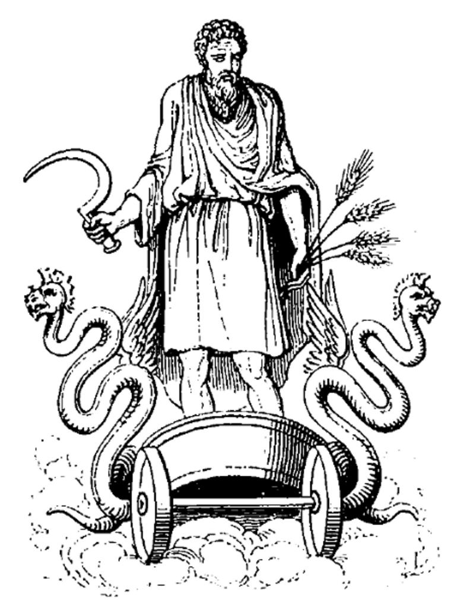

Cronus was the youngest of the 12 Titans in Greek Mythology. He became the king of the Titans and took Rhea, his sister, as his consort. He had 6 children with her: Zeus, Hestia, Hera, Hades, Demeter, and Posideon, and he swallowed them all up in order to avoid a warning that he would be overthrown by his child. He was defeated when Zeus, who had been hidden from him before he could be swallowed, grew up and freed his siblings, coming out victorious in a war against their father. Cronus then became imprisoned in Tartarus.
